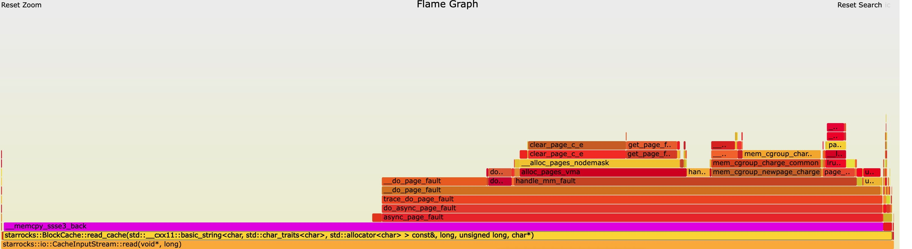
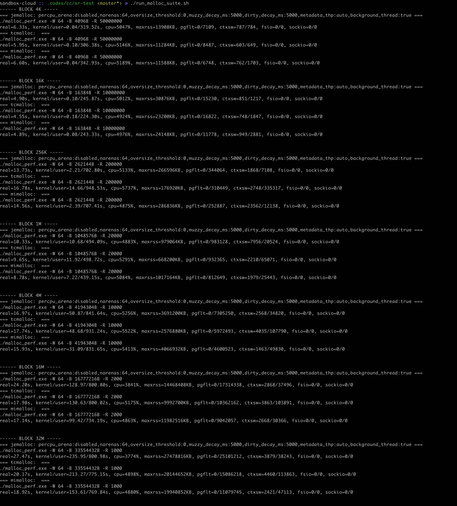
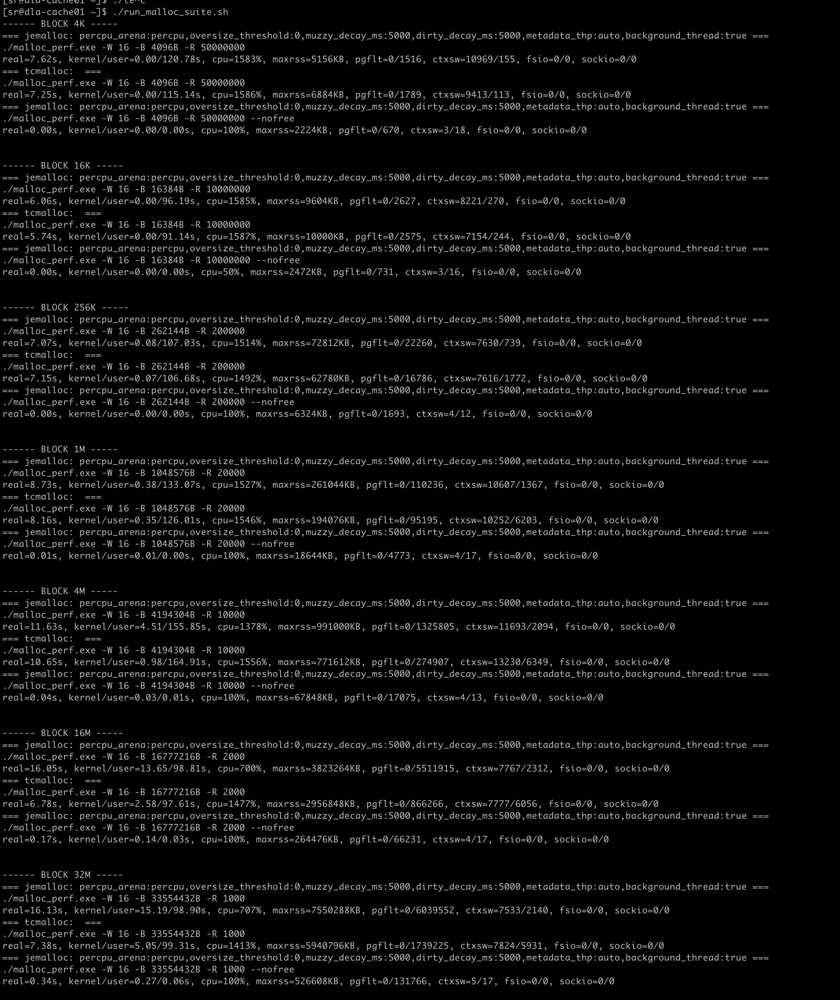
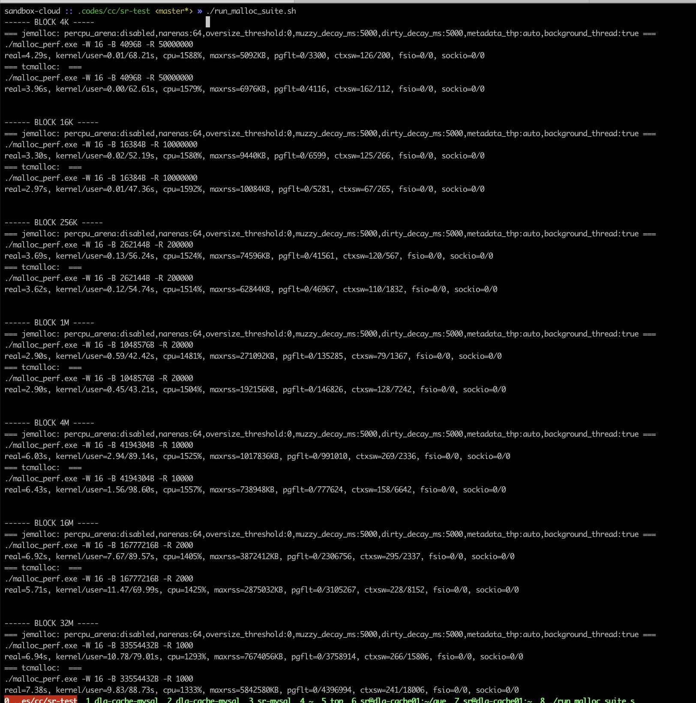
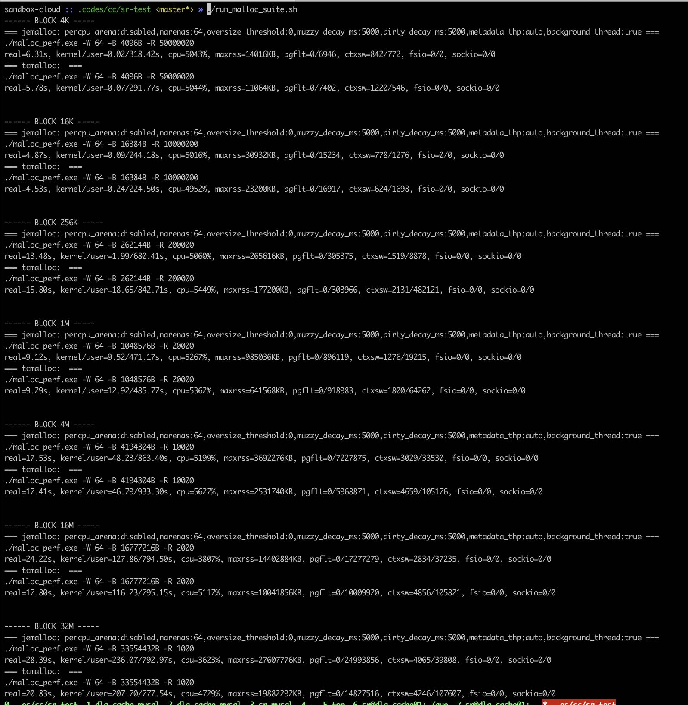
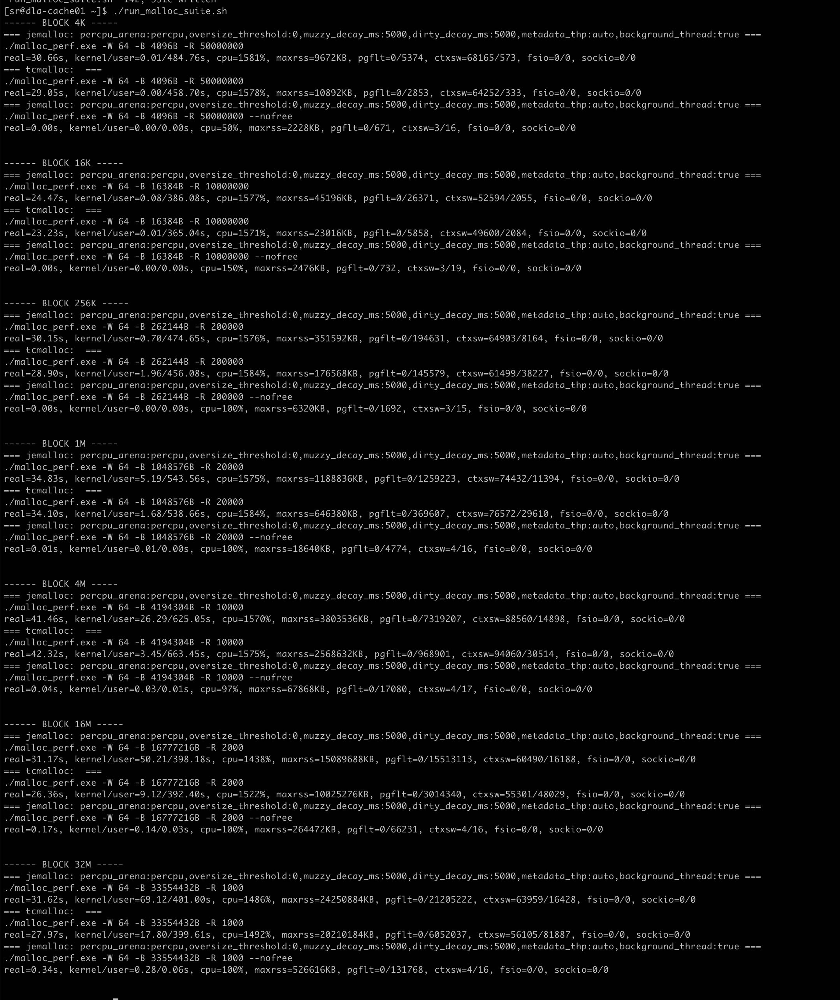

一个简单的tcmalloc/jemalloc性能测试对比
Table of Contents
1. 测试背景
最近在测试block cache的时候(ssb100g), 发现使用jemalloc和tcmalloc在执行速度上存在一定的差距。以ssb/q07为例，jemalloc版本大约在1200ms, 而tcmalloc版本在1000ms左右。如果对BE进行oncpu分析的话，发现有比较大的部分在 `do_async_page_fault` 这个函数上。

这个函数是KVM在处理page fault. [KVM async page fault](https://terenceli.github.io/%E6%8A%80%E6%9C%AF/2019/03/24/kvm-async-page-fault) 因为整个dataset其实都是放在内存里面的，所以这些page fault都是minor page fault, 物理内存分配速度跟不上导致的。
sr@dla-cache01 ~]$ systemd-detect-virt kvm
目前我们jemalloc的配置如下 [JEMALLOC](https://jemalloc.net/jemalloc.3.html)
export JEMALLOC_CONF="percpu_arena:percpu,oversize_threshold:0,muzzy_decay_ms:5000,dirty_decay_ms:5000,metadata_thp:auto,background_thread:true"
2. 测试构造
测试思路是，在不同尺寸内存块上反复分配以及释放，观察执行时间以及minor page fault. 实现思路是如下，具体代码可以看 `测试代码`一节：
- 每个线程上有N个大小为 `BLOCK_SIZE` 的内存块
- 每次随机挑选一个内存块进行释放或者是分配
- 如果是分配的话，那么进行memcpy
软件配置：
- jemalloc-5.3.0 直接使用 `configure`, 编译参数 `CONFIGURE_CXXFLAGS : -Wall -Wextra -g3 -fvisibility=hidden -Wimplicit-fallthrough -O3`
- gperftools-2.9.1 直接使用 `configure`, 编译参数好像是 `-g -O2`
- jemalloc 配置 `JEMALLOC_CONF="percpu_arena:percpu,oversize_threshold:0,muzzy_decay_ms:5000,dirty_decay_ms:5000,metadata_thp:auto,background_thread:true"`
- tcmalloc 默认配置
- mimalloc https://github.com/microsoft/mimalloc 默认配置
参数选择：
- 线程数量 16/64
- BLOCK_SIZE 4K, 16K, 256K, 1M, 4M, 16M, 32M
3. 测试结果
其中有个 `–nofree` 版本是，我们不释放内存而复用之前的内存，看看因为minor page fault造成多少开销。
3.1. 16cores
硬件配置: 16cores, 128GB(内存充足)
有这么几个发现：
- BLOCK_SIZE在4M以下
- 两者执行差不多, 两者都可以完全使用满CPU
- jemalloc的minor pgflt都比tcmalloc高， maxrss也要更高。
- BLOCK_SIZE在16M,32M下面
- 如果线程数是16，那么jemalloc只用到了核数的一半
- 如果线程数是32，那么jemalloc可以完全使用CPU
- tcmalloc都可以完全使用CPU
- jemalloc的minor pgflt是tcmalloc的倍数，maxrss也要更高。
线程数16执行情况如下图：

线程数64执行情况如下图：

3.2. 64cores
硬件配置104cores, 内存充足，使用 `taskset -c 0-63` 绑核处理来模拟64cores
因为运行的时候没有办法确定cpu cores, 会出现如下错误：
=== jemalloc: percpu_arena:percpu,oversize_threshold:0,muzzy_decay_ms:5000,dirty_decay_ms:5000,metadata_thp:auto,background_thread:true === <jemalloc>: Number of CPUs detected is not deterministic. Per-CPU arena disabled.
所以这里修改了JEMALLOC_CONF配置如下
JEMALLOC_CONF="percpu_arena:disabled,narenas:64,oversize_threshold:0,muzzy_decay_ms:5000,dirty_decay_ms:5000,metadata_thp:auto,background_thread:true"
有这么几个发现：
- 16线程下面
- 两者执行时间都差不多，但是tcmalloc CPU略高
- 大部分情况下面两者的minor pgflt差不多，tcmalloc也有略高的时候
- 内存块<=16K的时候，tcmalloc maxrss更高，而>16K之后, jemalloc maxrss更高
- 64线程下面
- jemalloc maxrss和minor pgflt都比tcmalloc高
- 内存块>=16M 上面jemalloc核没有充分利用起来，CPU利用率比tcmalloc低，时间也更长
- UPDATE: 看上去mimalloc在maxrss, pgflt, 时间上都要更好点
16线程情况如下图

64线程情况如下图

UDPATE: 64线程下面增加mimalloc
